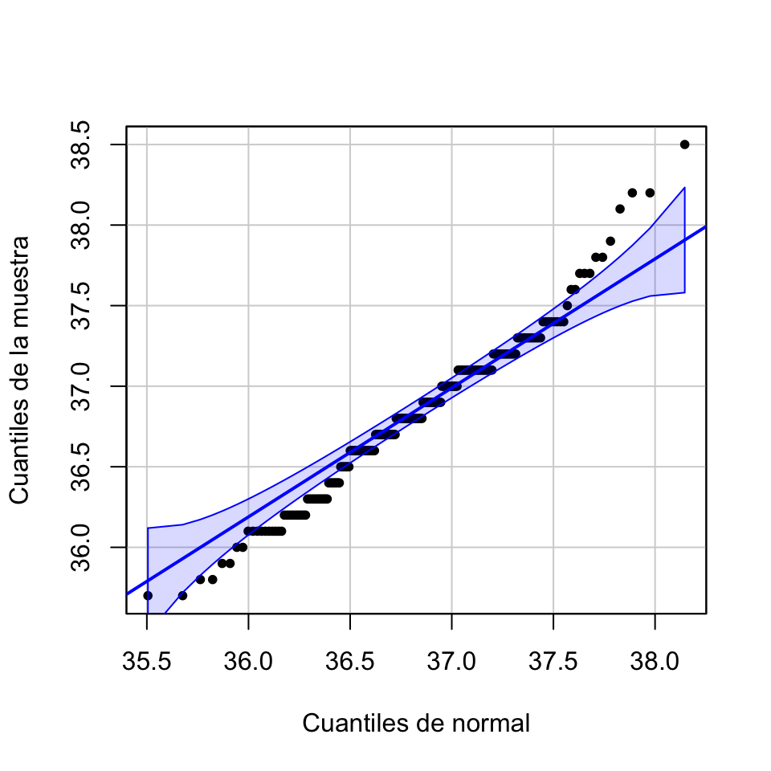

Lección 3 Distribuciones muestrales de estimadores
3.1 Conceptos básicos
El problema típico de la estadística inferencial es:
Queremos conocer el valor de una característica en el total de una población, pero no podemos medir esta característica en todos los individuos de la población.
Extraemos una muestra de la población, medimos la característica en los individuos de esta muestra, calculamos algo con estas medidas e inferimos el valor de la característica en el global de la población.
Inmediatamente surgen varias preguntas que responderemos entre esta lección y la próxima.
- ¿Cómo tiene que ser la muestra?
- ¿Qué tenemos que calcular?
- ¿Con qué precisión podemos inferir la característica de la población?
¿Qué tipo de muestra tomamos? Vamos a suponer de ahora en adelante que tomamos muestras aleatorias simples. También permitimos muestras aleatorias sin reposición si la población es mucho más grande que la muestra, ya que entonces no hay diferencia práctica entre permitir y prohibir las repeticiones. Y en algunos casos muy concretos permitiremos muestras aleatorias sin reposición en general.
Sí, ya sabemos que en la práctica casi nunca tomamos muestras aleatorias. En este caso, recordad lo que os explicábamos en la Sección ??. Lo que se suele hacer es describir en detalle las características de la muestra para justificar que, pese a no ser aleatoria, es razonablemente representativa de la población y podría pasar por aleatoria.
¿Qué calculamos? Pues un estimador: alguna función adecuada aplicada a los valores de la muestra. Por ejemplo
Si queremos estimar la altura media de los estudiantes de la UIB, tomaremos una muestra aleatoria de estudiantes de la UIB, mediremos sus alturas y calcularemos su media aritmética.
Si queremos estimar la proporción de estudiantes de la UIB que han pasado la COVID-19, tomaremos una muestra aleatoria de estudiantes de la UIB, les haremos un test de anticuerpos y calcularemos la proporción muestral de positivos en la muestra.
Si queremos estimar el riesgo relativo para un estudiante de la UIB de suspender alguna asignatura si es fumador, tomarmos una muestra aleatoria de estudiantes de la UIB, anotaremos si fuman o no y si han suspendido alguna asignatura o no, y calcularemos la diferencia entre las proporciones muestrales de suspensos entre los fumadores y los no fumadores de la muestra.
3.2 La media muestral
Cuando queremos estimar el valor medio de una medida sobre una población, tomamos una muestra de valores y calculamos su media aritmética, ¿verdad?
Pues eso. Dada una variable aleatoria \(X\), llamamos media muestral (de tamaño \(n\)) a la variable aleatoria \(\overline{X}\) “Tomamos una muestra aleatoria de tamaño \(n\) de \(X\) y calculamos la media aritmética de sus valores”.
Tenemos el teorema siguiente
Teorema 3.1 Sea \(X\) una variable aleatoria de media \(\mu_X\) y desviación típica \(\sigma_X\), y sea \(\overline{X}\) la media muestral de tamaño \(n\) de \(X\). Entonces:
\(E(\overline{X})=\mu_X\)
Si las muestras aleatorias son simples, \(\sigma(\overline{X})=\dfrac{\sigma_X}{\sqrt{n}}\)
Si las muestras aleatorias no son simples y \(N\) es el tamaño de la población, \[ \sigma(\overline{X})=\frac{\sigma_X}{\sqrt{n}}\cdot\sqrt{\frac{N-n}{N-1}} \]
Al factor \[ \sqrt{\frac{N-n}{N-1}} \] que transforma \(\sigma(\overline{X})\) para muestras aleatorias simples a la desviación típica de \(\overline{X}\) para muestras aleatorias sin reposición se le llama el factor de población finita, y si os fijáis, es el que transformaba la desviación típica de una variable binomial (que cuenta éxitos en muestras aleatorias simples) en la desviación típica de una variable hipergeométrica (que cuenta éxitos en muestras aleatorias sin reposición).
Y recordad que si el tamaño de la población \(N\) es muy grande comparado con \(n\), podemos suponer que una muestra aleatoria sin reposición es simple.
Que \(E(\overline{X})\) sea \(\mu_X\) nos indica que \(\overline{X}\) sirve para estimar \(\mu_X\), porque su valor esperado es \(\mu_X\):
Si calculáramos muchas medias de muestras aleatorias de \(X\), es muy probable que, de media, obtuviéramos un valor muy cercano a \(\mu_X\).
Cuando el valor esperado de un estimador es precisamente el parámetro poblacional que se quiere estimar, se dice que el estimador es insesgado. Así, el primer punto del teorema anterior nos dice que la media muestral \(\overline{X}\) es un estimador insesgado de la media poblacional \(\mu_X\).
Que \(\sigma(\overline{X})\) sea \(\sigma_X/\sqrt{n}\) implica que la variabilidad de las medias muestrales crece con la variabilidad de \(X\) y decrece si tomamos muestras de mayor tamaño. A \(\sigma_X/\sqrt{n}\) se le llama el error típico de la media muestral (para la variable aleatoria \(X\) y muestras aleatorias simples de tamaño \(n\)).
La media muestral \(\overline{X}\) de muestras aleatorias simples de tamaño \(n\) de una variable aleatoria \(X\) se interpreta formalmente como la variable aleatoria obtenida tomando \(n\) copias independientes \(X_1,\ldots,X_n\) de \(X\) y calculando \[ \overline{X}=\frac{X_1+\cdots+X_n}{n}. \]
Por lo tanto, es una combinación lineal de \(n\) copias independientes de \(X\). Recordando que una combinación de variables aleatorias normales independientes es normal, tenemos el resultado siguiente:
Si \(X\) no es normal, la tesis del teorema anterior sigue siendo cierta “aproximadamente” si \(n\) es muy grande. Este resultado, llamado el Teorema central del límite es, como su nombre indica, uno de los más importantes en estadística.
En resumen, para muestras aleatorias simples:
Si \(X\) es normal, siempre se tiene que \(\overline{X}\) es \(N(\mu_X,{\sigma_X}/{\sqrt{n}})\)
Si \(X\) no es normal pero \(n\) es grande (pongamos \(n\geq 40\), aunque puede ser menor si \(X\) se parece a una normal y ha de ser mayor si \(X\) es muy diferente de una normal), \(\overline{X}\) es aproximadamente \(N(\mu_X,{\sigma_X}/{\sqrt{n}})\)
Para muestras que no sean (prácticamente) aleatorias simples, ambos resultados son falsos (incluso usando el factor de población finita), pero si no tenemos nada más…
3.3 La proporción muestral
Cuando queremos estimar la proporción de sujetos de una población que tienen una determinada característica, tomamos una muestra y calculamos la proporción de sujetos de la muestra con esta característica, ¿verdad?
Pues, de nuevo, eso. Dada una variable aleatoria de Bernoulli \(X\) con probabilidad poblacional de éxito \(p_X\), llamamos proporción muestral, \(\widehat{p}_X\), a la variable aleatoria consistente en tomar una muestra aleatoria de tamaño \(n\) de \(X\) y calcular la proporción de éxitos en la muestra: es decir, contar el número total de éxitos y dividir el resultado por \(n\)
Fijaos en que \(\widehat{p}_X\) es un caso particular de media muestral \(\overline{X}\): estamos calculando medias muestrales de muestras de la variable de Bernoulli \(X\). Por lo tanto, todo lo que hemos dicho para medias muestrales vale también para proporciones muestrales.
\(E(\widehat{p}_X)=p_X\)
Por lo tanto, \(\widehat{p}_X\) es un estimador insesgado de \(p_X\). Si calculáramos muchas proporciones muestrales de muestras aleatorias de \(X\), es muy probable que, de media, obtuviéramos un valor muy cercano a \(p_X\).
Si las muestras aleatorias son simples, \(\sigma({\widehat{p}_X})=\sqrt{\dfrac{p_X(1-p_X)}{n}}\).
En particular, si fijada la \(X\) tomamos muestras de tamaño mayor, la variabilidad de los resultados de \(\widehat{p}_X\) disminuye.
Si las muestras aleatorias no son simples (y \(N\) es el tamaño de la población), \[ \sigma({\widehat{p}_X})=\sqrt{\frac{p_X(1-p_X)}{n}}\cdot \sqrt{\frac{N-n}{N-1}} \]
Y como antes, si \(N\) es muy grande relativamente a \(n\), podemos suponer en la práctica que una muestra aleatoria sin reposición es simple
Si tomamos muestras aleatorias simples de tamaño \(n\) de una variable aleatoria Bernoulli \(X\):
\(\sqrt{\dfrac{p_X(1-p_X)}{n}}\) es el error típico de la variable aleatoria \(\widehat{p}_X\): su desviación típica.
Para cada muestra, \(\sqrt{\dfrac{\widehat{p}_X(1-\widehat{p}_X)}{n}}\) es el error típico de la muestra, que estima el error típico de \(\widehat{p}_X\).
Como la proporción muestral es un caso particular de media muestral, por el Teorema Central del Límite tenemos el resultado siguiente:
3.4 La varianza muestral
Dada una variable aleatoria \(X\), llamamos:
Varianza muestral, \(\widetilde{S}_{X}^2\), a la variable aleatoria consistente en tomar una muestra aleatoria de tamaño \(n\) de \(X\) y calcular la varianza muestral de sus valores.
Desviación típica muestral, \(\widetilde{S}_{X}\), a la variable aleatoria consistente en tomar una muestra aleatoria de tamaño \(n\) de \(X\) y calcular la desviación típica muestral de sus valores.
Formalmente, estas variables se definen tomando \(n\) copias independientes \(X_1,\ldots,X_n\) de \(X\) y calculando \[ \widetilde{S}_{X}^2=\frac{\sum_{i=1}^n (X_{i}-\overline{X})^2}{n-1},\quad \widetilde{S}_{X}=+\sqrt{\widetilde{S}_{X}^2} \]
Tenemos los dos resultados siguientes para variables poblacionales normales. El primero nos dice que en este caso \(\widetilde{S}_{X}^2\) es un estimador insesgado de la varianza poblacional \(\sigma_{X}^2\).
Por lo tanto, si \(X\) es normal, esperamos que la varianza muestral de una muestra aleatoria simple grande sea \(\sigma_{X}^2\), en el sentido usual de que si tomáramos muchas muestras aleatorias simples de \(X\) de tamaño \(n\) grande y calculáramos sus varianzas muestrales, es muy probable que la media de estas varianzas muestrales se aproximara mucho a \(\sigma_{X}^2\).
El segundo resultado nos dice que un múltiplo de la distribución muestral de \(\widetilde{S}_{X}^2\) es conocida, lo que nos permite calcular probabilidades.
La distribución \(\chi_n^2\) (la letra griega \(\chi\) en castellano se lee ji; en catalán, khi; en inglés, chi, pronunciado “xai”), donde \(n\) son los grados de libertad, es la distribución de probabilidad de la suma de los cuadrados de \(n\) variables aleatorias normales estándar independientes. Para R es chisq. Os puede interesar recordar que una variable \(\chi_n^2\):
Tien valor esperado \(\mu=n\) y varianza \(\sigma^2=2 n\)
Tiene una distribución asimétrica a la derecha, como muestra el gráfico siguiente:
curve(dchisq(x,1),col=1,lwd=2,xlim=c(0,20),xlab="",ylab="",ylim=c(0,0.3),main="Algunas ji quadrado")
curve(dchisq(x,2),col=2,lwd=2,add=TRUE)
curve(dchisq(x,3),col=3,lwd=2,add=TRUE)
curve(dchisq(x,4),col=4,lwd=2,add=TRUE)
curve(dchisq(x,5),col=5,lwd=2,add=TRUE)
curve(dchisq(x,10),col=6,lwd=2,add=TRUE)
legend("topright",col=1:6,lty=c(1,1),
lwd=c(2,2),legend=paste("n=",c(1:5,10),sep=""),cex=0.8)
Aunque, por el Teorema Central del Límite, si \(n\) es grande, la distribución \(\chi_n^2\) se aproxima a la de una variable normal \(N(n,\sqrt{2n})\).
curve(dchisq(x,300),xlim=c(150,450),lwd=2,xlab="",ylab="",main="Ji quadrado vs Normal")
curve(dnorm(x,300,sqrt(600)),lwd=2,col="red",add=TRUE)
legend("topleft",col=c("black","red"),lty=c(1,1),
lwd=c(2,2),legend=c("Ji quadrado con n=300","Normal"),cex=0.7)Tened cuidado:
Si la variable poblacional \(X\) no es normal o si las muestras aleatorias no son simples, las conclusiones de los dos teoremas anteriores no son verdaderas, ni tan solo aproximadamente o añadiendo factores de corrección tipo el factor de población finita.
Aunque \(X\) sea normal, \(E(\widetilde{S}_{X})\neq \sigma_{X}\).
Aunque \(X\) sea normal, si \(S^2_{X}\) es la varianza a secas (dividiendo por \(n\)), \(E(S^2_{X})\neq \sigma^2_{X}\). Esto lo podéis comprobar fácilmente, porque \(S_X^2\) se obtiene a partir de \(\widetilde{S}_{X}\) cambiando el denominador, \[ S_X^2=\frac{n-1}{n} \widetilde{S}_{X} \] y por lo tanto \[ E(S_X^2)=\frac{n-1}{n}E(\widetilde{S}_{X})=\frac{n-1}{n}\sigma^2_{X} \]
3.5 La media muestral \(\overline{X}\), de nuevo
Recordad que si la variable poblacional \(X\) es \(N(\mu_X,\sigma_X)\) y tomamos muestras aleatorias simples de tamaño \(n\), entonces la variable \[ \frac{\overline{X}-\mu}{\sigma_{X}/\sqrt{n}} \] es normal estándar. Desde el prunto de vista teórico, para óbtener fórmulas, esto será útil, pero normalmente no nos sirve para calcular la probabilidad de que a \(\overline{X}\) le pase algo, porque normalmente no conocemos la desviación típica poblacional \(\sigma_{X}\). ¿Qué pasa si la estimamos por medio de \(\widetilde{S}_{X}\) con la misma muestra con la que calculamos \(\overline{X}\)? Pues que el resultado siguiente nos salva el día, porque la variable que resulta tiene distribución conocida.
Teorema 3.8 Sea \(X\) una variable \(N(\mu_X,\sigma_X)\). Si tomamos muestras aleatorias simples de tamaño \(n\), la variable aleatoria \[ T=\frac{\overline{X}-\mu_X}{\widetilde{S}_{X}/\sqrt{n}} \] tiene una distribución conocida, llamada t de Student con \(n-1\) grados de libertad, \(t_{n-1}\).
Al denominador \(\widetilde{S}_{X}/\sqrt{n}\) se le llama el error típico de la muestra, y estima el error típico \(\sigma_X/\sqrt{n}\) de la media muestral \(\overline{X}\).
Algunas propiedades que conviene que recordéis de las variables \(T_m\) que tienen distribución \(t\) de Student con \(m\) grados de libertad, \(t_m\):
Su valor esperado es \(E(T_m)=0\) (si \(m>1\)) y su varianza es \(Var(T_m)=\dfrac{m}{m-2}\) (si \(m>2\)).
Su función de distribución es simétrica respecto de \(0\) (como la de una \(N(0,1)\)): \[ P(T_m\leq -x)=P(T_m\geq x)=1-P(T_m\leq x) \]
Si \(m\) es grande, \(T_m\) es aproximadamente una \(N(0,1)\) (pero con un poco más de varianza: un poco más achatada). Esto es consecuencia del Teorema Central del Límite.
curve(dnorm(x),col=1,lwd=2,xlim=c(-4,4),xlab="",ylab="",ylim=c(0,0.4),
main="Algunas t de Student")
curve(dt(x,2),col=2,lwd=2,add=TRUE)
curve(dt(x,3),col=3,lwd=2,add=TRUE)
curve(dt(x,4),col=4,lwd=2,add=TRUE)
curve(dt(x,5),col=5,lwd=2,add=TRUE)
curve(dt(x,10),col=6,lwd=2,add=TRUE)
legend("topleft",col=1:6,lty=rep(1,6), lwd=rep(2,6),
legend=c("Normal estandar", paste("Student con g.l.=",c(2:5,10),sep="")),cex=0.7)
curve(dnorm(x),col=1,lwd=2,xlim=c(-4,4),xlab="",ylab="",ylim=c(0,0.4),
main="t vs Normal estandar")
curve(dt(x,50),col=2,lwd=2,add=TRUE)
legend("topleft",col=1:2,lty=rep(1,2), lwd=rep(2,2),
legend=c("Normal estandar", "Student con g.l.=50"),cex=0.7)
Denotaremos por \(t_{m,q}\) el \(q\)-cuantil de una variable aleatoria \(T_{m}\) con distribución \(t_m\). Es decir, \(t_{m,q}\) és el valor tal que \[ P(T_{m}\leq t_{m,q})=q \] Entonces:
Por la simetría de la distribución \(t_m\), \[ t_{m,q}=-t_{m,1-q}. \] Exactamente igual que para la normal estándar
Si \(m\) es grande, como \(T_m\) será aproximadamente una \(N(0,1)\), \(t_{m,q}\approx z_q\).
No confundáis:
Desviación típica de una variable aleatoria: El parámetro poblacional, normalmente desconocido. Es \(\sigma_X\)
Desviación típica (muestral o no) de una muestra: El estadístico que calculamos sobre la muestra; lo damos cuando describimos la muestra. Es \(\widetilde{S}_X\) (la muestral) o \({S}_X\) (la “verdadera”).
Error típico de la media muestral: La desviación típica de la variable media muestral. Es \(\sigma_X/\sqrt{n}\), con \(n\) el tamaño de las muestras.
Error típico de una muestra: Estimación del error típico del estimador a partir de la muestra. Es \(\widetilde{S}_X/\sqrt{n}\), con \(n\) el tamaño de la muestra.
3.6 Test
(1) Si el tamaño de una muestra aleatoria simple de una variable aleatoria aumenta (marcad todas las afirmaciones correctas):
- La media muestral siempre disminuye.
- El error típico de la media muestral siempre disminuye.
- El error típico de la muestra siempre disminuye.
- La varianza muestral siempre aumenta.
- El número de grados de libertad del estimador \(\chi^2\) asociado a la varianza muestral siempre aumenta.
- Ninguna de las otras afirmaciones es correcta
(2) Si queremos disminuir a la mitad el error típico de una media muestral (calculada a partir de muestras aleatorias simples):
- Tenemos que aumentar en un 50% el tamaño de la muestra
- Tenemos que doblar el tamaño de la muestra.
- Tenemos que cuadruplicar el tamaño de la muestra.
- Tenemos que dividir por 2 el tamaño de la muestra.
- Tenemos que dividir por 4 el tamaño de la muestra.
- Ninguna de las otras respuestas es correcta.
(3) La prevalencia de una afección en una población es del 10%. Si estimamos dicha prevalencia repetidamente a partir de muestras de tamaño 1000, estas estimaciones siguen una distribución que (marcad todas las afirmaciones correctas):
- Es una distribución muestral.
- Es aproximadamente normal.
- Es binomial.
- Tiene media 0.1.
- Tiene media 900.
- Ninguna de las otras afirmaciones es correcta